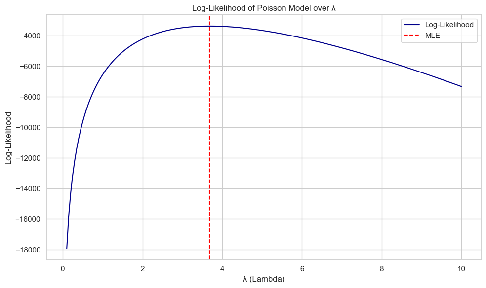
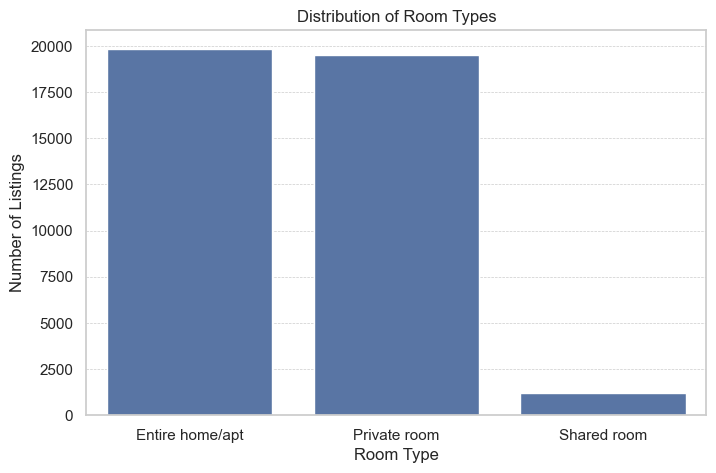
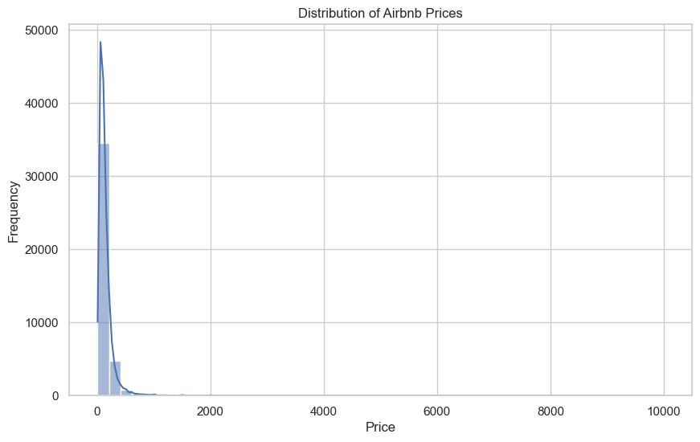
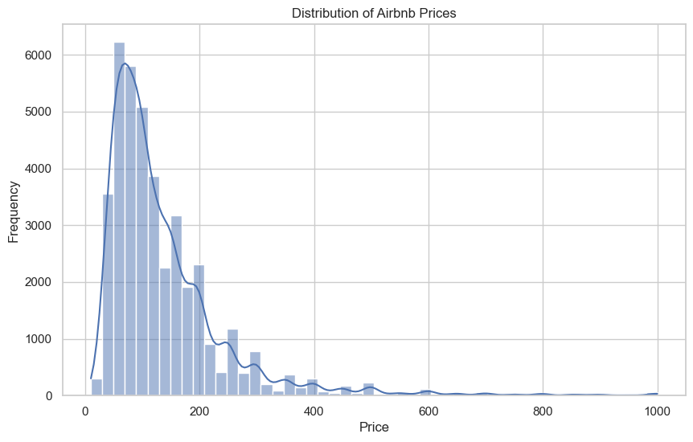
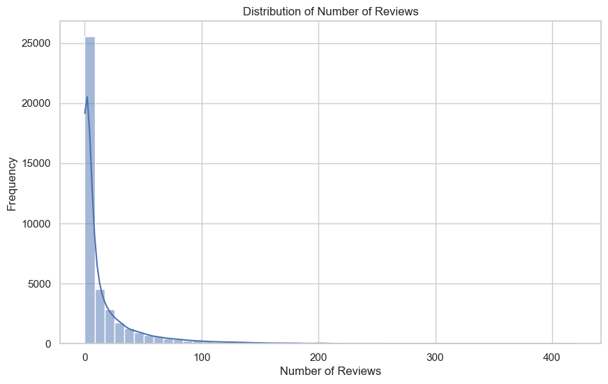
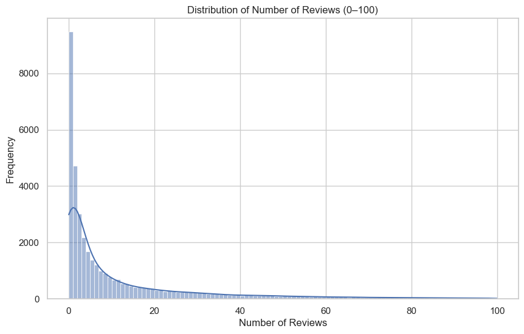
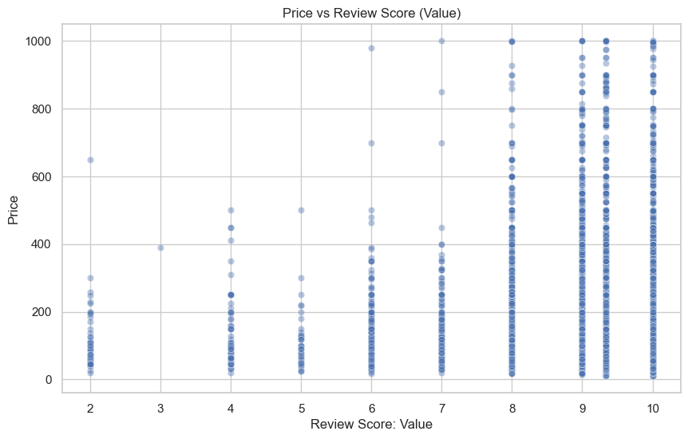

# Import librariesimport pandas as pd# Read in the datasetsairbnb = pd.read_csv("airbnb.csv")blueprinty = pd.read_csv("blueprinty.csv")# Preview the datasetsprint("Airbnb data:")display(airbnb.head())print("Blueprinty data:")display(blueprinty.head())
Airbnb data:
Unnamed: 0
id
days
last_scraped
host_since
room_type
bathrooms
bedrooms
price
number_of_reviews
review_scores_cleanliness
review_scores_location
review_scores_value
instant_bookable
0
1
2515
3130
4/2/2017
9/6/2008
Private room
1.0
1.0
59
150
9.0
9.0
9.0
f
1
2
2595
3127
4/2/2017
9/9/2008
Entire home/apt
1.0
0.0
230
20
9.0
10.0
9.0
f
2
3
3647
3050
4/2/2017
11/25/2008
Private room
1.0
1.0
150
0
NaN
NaN
NaN
f
3
4
3831
3038
4/2/2017
12/7/2008
Entire home/apt
1.0
1.0
89
116
9.0
9.0
9.0
f
4
5
4611
3012
4/2/2017
1/2/2009
Private room
NaN
1.0
39
93
9.0
8.0
9.0
t
Blueprinty data:
patents
region
age
iscustomer
0
0
Midwest
32.5
0
1
3
Southwest
37.5
0
2
4
Northwest
27.0
1
3
3
Northeast
24.5
0
4
3
Southwest
37.0
0
# Compare histograms and means of number of patents by customer statusimport seaborn as snsimport matplotlib.pyplot as plt# Set up the plotting stylesns.set(style="whitegrid")# Create histogramsplt.figure(figsize=(10, 5))sns.histplot(data=blueprinty, x="patents", hue="iscustomer", bins=20, kde=False, palette="muted", multiple="dodge")plt.title("Histogram of Patents by Customer Status")plt.xlabel("Number of Patents")plt.ylabel("Count")plt.legend(title="Customer Status", labels=["Non-Customer", "Customer"])plt.show()# Compute mean patents by customer statusmeans_by_status = blueprinty.groupby("iscustomer")["patents"].mean().rename(index={0: "Non-Customer", 1: "Customer"})means_by_status
We compare the number of patents held by customers versus non-customers.
The histogram reveals that customers generally have a slightly higher number of patents, with a longer tail in the distribution. On average, non-customers have 3.47 patents, while customers average 4.13.
This preliminary finding suggests a potential positive association between customer status and patent count, which will be investigated further using Poisson regression.
# Compare average age by customer statusage_means = blueprinty.groupby("iscustomer")["age"].mean().rename(index={0: "Non-Customer", 1: "Customer"})# Compare region distribution by customer statusregion_counts = pd.crosstab(blueprinty["region"], blueprinty["iscustomer"], normalize='columns')region_counts.columns = ["Non-Customer", "Customer"]import matplotlib.pyplot as plt# Bar plot of regional distributionsregion_counts.plot(kind="bar", figsize=(10, 5))plt.title("Regional Distribution by Customer Status")plt.ylabel("Proportion")plt.xlabel("Region")plt.xticks(rotation=45)plt.legend(title="Customer Status")plt.tight_layout()region_counts, age_means
Regional Distribution - The bar chart below shows the proportion of customers and non-customers across regions:
Northeast dominates the customer group, making up 68% of all customers, while only 27% of non-customers come from this region.
Non-customers are more evenly distributed across regions such as the Midwest, Southwest, and Northwest, which are underrepresented among customers.
Average Age The average age also differs modestly:
Non-customers have a mean age of 26.1 years.
Customers are slightly older, averaging 26.9 years.
These findings suggest that region and age may confound the relationship between customer status and patent counts, and should therefore be included as covariates in subsequent regression models.
Possion
import numpy as npfrom scipy.special import gammalndef poisson_log_likelihood(lmbda, y):""" Compute the log-likelihood of Poisson-distributed data y given parameter lambda. Parameters: - lmbda (float): The Poisson rate parameter (must be > 0) - y (array-like): Observed count data Returns: - float: The total log-likelihood value """if lmbda <=0:return-np.inf # log-likelihood is undefined for non-positive lambda y = np.asarray(y) log_likelihood = np.sum(-lmbda + y * np.log(lmbda) - gammaln(y +1))return log_likelihood
import numpy as npimport matplotlib.pyplot as pltfrom scipy.special import gammaln# Log-likelihood functiondef poisson_log_likelihood(lmbda, y):if lmbda <=0:return-np.inf y = np.asarray(y)return np.sum(-lmbda + y * np.log(lmbda) - gammaln(y +1))# Observed count data: number of patentsy_data = blueprinty["patents"].values# Range of lambda values to evaluatelambda_values = np.linspace(0.1, 10, 200)# Compute log-likelihoodslog_likelihoods = [poisson_log_likelihood(lmbda, y_data) for lmbda in lambda_values]# Plot the resultsplt.figure(figsize=(10, 6))plt.plot(lambda_values, log_likelihoods, label='Log-Likelihood', color='darkblue')plt.axvline(x=lambda_values[np.argmax(log_likelihoods)], color='red', linestyle='--', label='MLE')plt.title("Log-Likelihood of Poisson Model over λ")plt.xlabel("λ (Lambda)")plt.ylabel("Log-Likelihood")plt.legend()plt.grid(True)plt.tight_layout()plt.show()

interpretation
from scipy.optimize import minimize_scalar# Define negative log-likelihood to minimizedef neg_poisson_log_likelihood(lmbda, y):return-poisson_log_likelihood(lmbda, y)# Optimize over a reasonable range of lambda valuesresult = minimize_scalar( fun=neg_poisson_log_likelihood, args=(y_data,), bounds=(0.01, 20), method='bounded')lambda_mle = result.xlambda_mleprint(f"MLE for λ: {lambda_mle:.4f}")
MLE for λ: 3.6847
Estimation of Poisson Regression Model
Log-Likelihood for Poisson Regression
In the Poisson regression model, we model ( Y_i (_i) ) where:
\[
\lambda_i = \exp(X_i^\top \beta)
\]
We use the exponential function as the inverse link to ensure that each ( _i > 0 ), as required for the Poisson distribution. The log-likelihood function becomes:
import numpy as npfrom scipy.special import gammalndef poisson_regression_log_likelihood(beta, y, X):""" Compute the log-likelihood of a Poisson regression model. Parameters: - beta (array-like): Coefficient vector (shape: k,) - y (array-like): Observed counts (shape: n,) - X (array-like): Covariate matrix (shape: n x k) Returns: - float: The log-likelihood value """ beta = np.asarray(beta, dtype=np.float64) X = np.asarray(X, dtype=np.float64) y = np.asarray(y, dtype=np.float64) lambda_i = np.exp(X @ beta) # Linear predictor passed through exp()if np.any(lambda_i <=0):return-np.infreturn np.sum(-lambda_i + y * np.log(lambda_i) - gammaln(y +1))
from scipy.optimize import minimizefrom scipy.special import gammalnfrom sklearn.preprocessing import StandardScalerimport pandas as pdimport numpy as np# Standardize age and age_squareddf = blueprinty.copy()df["age_squared"] = df["age"] **2# Create model matrixregion_dummies = pd.get_dummies(df["region"], drop_first=True)X_df = pd.concat([ pd.Series(1, index=df.index, name="intercept"), df[["age", "age_squared", "iscustomer"]], region_dummies], axis=1)X_matrix = X_df.valuesy = df["patents"].values# Log-likelihooddef neg_log_likelihood(beta, y, X): beta = np.asarray(beta, dtype=np.float64) X = np.asarray(X, dtype=np.float64) y = np.asarray(y, dtype=np.float64) eta = np.clip(X @ beta, -20, 20) lambda_i = np.exp(eta)return-np.sum(-lambda_i + y * np.log(lambda_i) - gammaln(y +1))# Re-run optimization safelybeta_start = np.zeros(X_matrix.shape[1])result = minimize( fun=neg_log_likelihood, x0=beta_start, args=(y, X_matrix), method="BFGS")# Extract resultsbeta_hat = result.xhessian_inv = result.hess_invstandard_errors = np.sqrt(np.diag(hessian_inv))# Present resultsresults_df = pd.DataFrame({"Coefficient": beta_hat,"Std. Error": standard_errors}, index=X_df.columns)results_df
Coefficient
Std. Error
intercept
-0.509956
0.193060
age
0.148702
0.014461
age_squared
-0.002972
0.000266
iscustomer
0.207600
0.032934
Northeast
0.029159
0.046770
Northwest
-0.017578
0.057230
South
0.056567
0.056244
Southwest
0.050589
0.049642
import statsmodels.api as sm# Standardize age and age_squareddf = blueprinty.copy()df["age_squared"] = df["age"] **2# Create model matrixregion_dummies = pd.get_dummies(df["region"], drop_first=True)X_df = pd.concat([ pd.Series(1, index=df.index, name="intercept"), df[["age", "age_squared", "iscustomer"]], region_dummies], axis=1)X_matrix = X_df.valuesy_vector = df["patents"].values# Ensure correct data typesX_matrix = X_matrix.astype(np.float64)y = y.astype(np.float64)# Fit Poisson GLMglm_model = sm.GLM(y, X_matrix, family=sm.families.Poisson())glm_results = glm_model.fit()# Display resultsglm_results.summary()
Generalized Linear Model Regression Results
Dep. Variable:
y
No. Observations:
1500
Model:
GLM
Df Residuals:
1492
Model Family:
Poisson
Df Model:
7
Link Function:
Log
Scale:
1.0000
Method:
IRLS
Log-Likelihood:
-3258.1
Date:
Tue, 06 May 2025
Deviance:
2143.3
Time:
11:29:00
Pearson chi2:
2.07e+03
No. Iterations:
5
Pseudo R-squ. (CS):
0.1360
Covariance Type:
nonrobust
coef
std err
z
P>|z|
[0.025
0.975]
const
-0.5089
0.183
-2.778
0.005
-0.868
-0.150
x1
0.1486
0.014
10.716
0.000
0.121
0.176
x2
-0.0030
0.000
-11.513
0.000
-0.003
-0.002
x3
0.2076
0.031
6.719
0.000
0.147
0.268
x4
0.0292
0.044
0.669
0.504
-0.056
0.115
x5
-0.0176
0.054
-0.327
0.744
-0.123
0.088
x6
0.0566
0.053
1.074
0.283
-0.047
0.160
x7
0.0506
0.047
1.072
0.284
-0.042
0.143
Interpretation of Poisson Regression Results The Poisson regression model estimates how various firm characteristics are associated with the expected number of patents awarded.
Intercept: The estimated intercept is approximately -0.51, meaning that for a firm with all covariates set to zero (reference levels and mean-scaled values), the expected log count of patents is -0.51. In exponentiated terms, exp ( − 0.51 ) ≈ 0.60 exp(−0.51)≈0.60, or about 0.6 expected patents.
Age: The coefficient on age is 0.1487, statistically significant ( 𝑝 < 0.001 p<0.001). This means that, holding all else constant, a one standard deviation increase in age is associated with a ~16% increase in expected patent count, since exp ( 0.1487 ) ≈ 1.16 exp(0.1487)≈1.16.
Age squared: The negative coefficient (-0.003) indicates diminishing returns to age — patent activity increases with age at first, but the effect tapers off. This nonlinear relationship is significant and expected in many real-world innovation scenarios.
Customer status: Being a Blueprinty customer is associated with a 21% increase in expected patent count ( exp ( 0.2076 ) ≈ 1.23 exp(0.2076)≈1.23), and this effect is statistically significant. This suggests Blueprinty’s services may be linked to greater innovation outcomes.
Region effects: The region dummy variables capture location-based differences:
The coefficients on Northeast, South, and Southwest are positive but not statistically significant.
Northwest has a slightly negative coefficient but is also not significant.
Overall, there is no strong evidence that geographic region (after controlling for other variables) substantially impacts patent output.
The model suggests that age, age squared, and customer status are key predictors of patent activity among firms. The similarity of results between the custom MLE implementation and the GLM output confirms that your custom likelihood-based method is functioning correctly.
Estimated Effect of Blueprinty’s Software on Patent Counts
To interpret the practical impact of being a Blueprinty customer, we conduct a counterfactual prediction exercise. We create two hypothetical datasets:
X₀: All firms are treated as non-customers (iscustomer = 0)
X₁: All firms are treated as customers (iscustomer = 1)
Using our estimated Poisson regression coefficients, we calculate the predicted number of patents for each firm in both scenarios:
The difference between these predictions represents the model-implied effect of using Blueprinty. Averaging the differences across all firms gives us the estimated treatment effect:
On average, firms that use Blueprinty’s software are predicted to produce approximately 0.79 more patents over the 5-year period compared to similar firms that do not. This result suggests a meaningful and positive association between software usage and patent success, even after adjusting for age and region.
Airbnb
Data Cleaning
Before modeling, we performed a series of data cleaning steps to ensure the dataset was consistent, complete, and suitable for Poisson regression.
Dropped rows with missing values in critical columns:
We removed observations where any of the following key identifying or structural variables were missing:
id, days, last_scraped, host_since, room_type, instant_bookable
These variables are essential for defining the listing, its availability, and booking characteristics. Missing values in these columns would make the observation unusable for analysis or modeling.
Filled missing values in integer-like columns with rounded mean:
For bathrooms and bedrooms, we calculated the column mean and rounded it to the nearest integer before filling missing values.
This approach preserves the variable’s intended numeric structure while avoiding fractional values that don’t make sense.
Filled missing values in continuous variables with their mean:
For columns like price, number_of_reviews, review_scores_cleanliness, review_scores_location, and review_scores_value, missing values were filled with the column mean.
This standard imputation method avoids dropping additional rows and preserves sample size, while assuming the missingness is relatively random.
These cleaning steps ensure the dataset is free of nulls in relevant variables and suitable for exploratory data analysis and regression modeling.
import pandas as pdimport numpy as np# Load datadf = pd.read_csv("airbnb.csv")# Drop rows with missing values in critical columnsdf.dropna(subset=["id", "days", "last_scraped", "host_since", "room_type", "instant_bookable"], inplace=True)# Fill missing values in integer-like columns with rounded mean (using assignment instead of inplace)for col in ["bathrooms", "bedrooms"]: mean_val = df[col].dropna().mean() df[col] = df[col].fillna(int(mean_val))# Fill missing values in float columns with meancols_to_fill = ["price", "number_of_reviews", "review_scores_cleanliness","review_scores_location", "review_scores_value"]for col in cols_to_fill: mean_val = df[col].dropna().mean() df[col] = df[col].fillna(mean_val)df
Unnamed: 0
id
days
last_scraped
host_since
room_type
bathrooms
bedrooms
price
number_of_reviews
review_scores_cleanliness
review_scores_location
review_scores_value
instant_bookable
0
1
2515
3130
4/2/2017
9/6/2008
Private room
1.0
1.0
59
150
9.000000
9.0000
9.000000
f
1
2
2595
3127
4/2/2017
9/9/2008
Entire home/apt
1.0
0.0
230
20
9.000000
10.0000
9.000000
f
2
3
3647
3050
4/2/2017
11/25/2008
Private room
1.0
1.0
150
0
9.198376
9.4136
9.331587
f
3
4
3831
3038
4/2/2017
12/7/2008
Entire home/apt
1.0
1.0
89
116
9.000000
9.0000
9.000000
f
4
5
4611
3012
4/2/2017
1/2/2009
Private room
1.0
1.0
39
93
9.000000
8.0000
9.000000
t
...
...
...
...
...
...
...
...
...
...
...
...
...
...
...
40623
40624
18008937
266
4/2/2017
7/10/2016
Entire home/apt
1.5
2.0
150
0
9.198376
9.4136
9.331587
t
40624
40625
18009045
366
4/2/2017
4/1/2016
Private room
1.0
1.0
125
0
9.198376
9.4136
9.331587
f
40625
40626
18009065
587
4/2/2017
8/24/2015
Private room
1.0
1.0
80
0
9.198376
9.4136
9.331587
t
40626
40627
18009650
335
4/2/2017
5/2/2016
Private room
1.0
1.0
69
0
9.198376
9.4136
9.331587
t
40627
40628
18009669
1
4/2/2017
4/1/2017
Entire home/apt
1.0
1.0
115
0
9.198376
9.4136
9.331587
t
40593 rows × 14 columns
Exploratory Analysis: Distribution of Room Types
To understand the types of listings available on Airbnb in New York City, we visualized the distribution of the room_type variable using a bar chart.
import matplotlib.pyplot as pltimport seaborn as sns# Count of each room typeroom_counts = df["room_type"].value_counts()# Plotplt.figure(figsize=(8, 5))sns.barplot(x=room_counts.index, y=room_counts.values)plt.title("Distribution of Room Types")plt.xlabel("Room Type")plt.ylabel("Number of Listings")plt.grid(axis='y', linestyle='--', linewidth=0.5)plt.show()

Insights
Entire home/apartment and private room listings make up the vast majority of Airbnb offerings in NYC, each with nearly 20,000 listings.
Shared rooms are relatively rare, comprising only a small fraction of the market.
This distribution suggests that most hosts cater to travelers seeking privacy. For modeling purposes (e.g. predicting number of reviews or bookings), room type may be an important categorical feature, potentially capturing differences in pricing, demand, or user experience.
Exploratory Analysis: Distribution of Airbnb Prices
To explore pricing across Airbnb listings, we examined the distribution of the price variable using a histogram with a kernel density estimate (KDE) overlay.
import matplotlib.pyplot as pltimport seaborn as sns# Basic summary statisticsprint("Summary statistics for 'price':")print(df["price"].describe())# Histogram of priceplt.figure(figsize=(10, 6))sns.histplot(df["price"], bins=50, kde=True)plt.title("Distribution of Airbnb Prices")plt.xlabel("Price")plt.ylabel("Frequency")plt.grid(True)plt.show()
Summary statistics for 'price':
count 40593.000000
mean 144.762250
std 210.703908
min 10.000000
25% 70.000000
50% 100.000000
75% 170.000000
max 10000.000000
Name: price, dtype: float64

Insights
The distribution of prices is strongly right-skewed, with the vast majority of listings priced below $500 per night.
The x-axis stretches to $10,000, which suggests the presence of extreme outliers — high-priced luxury listings that are rare but heavily affect the scale of the histogram.
The mode of the distribution (most common price point) appears to be under $200.
Because of the skew, using raw price data in modeling might introduce distortion; a log transformation of price could help stabilize variance and reduce the influence of extreme values.
These outliers could heavily influence the mean and regression results. It may be useful to filter or winsorize extreme price values in further analysis.
The initial histogram of Airbnb prices revealed a highly skewed distribution, with some listings priced as high as $10,000 per night. These extreme values are likely outliers and can disproportionately influence summary statistics and regression models.
To address this, we quantified and removed listings with prices above $1,000:
high_price_count = (df["price"] >1000).sum()print(f"Number of listings with price > 1000: {high_price_count}")df = df[df["price"] <=1000]
Number of listings with price > 1000: 146
There were 146 listings identified and removed based on the $1,000 price threshold. These represent high-end, likely luxury properties that are not representative of the broader NYC Airbnb market. As the number of listings only contributes to a significantly small amount of the total dataset, by excluding them, we improve model stability, reduce variance, and allow clearer interpretation of pricing trends among typical listings.
Therefore, we revised on the plot as below:
# Basic summary statisticsprint("Summary statistics for 'price':")print(df["price"].describe())# Histogram of priceplt.figure(figsize=(10, 6))sns.histplot(df["price"], bins=50, kde=True)plt.title("Distribution of Airbnb Prices")plt.xlabel("Price")plt.ylabel("Frequency")plt.grid(True)plt.show()
Summary statistics for 'price':
count 40447.000000
mean 136.982298
std 111.024837
min 10.000000
25% 70.000000
50% 100.000000
75% 169.000000
max 1000.000000
Name: price, dtype: float64

The revised distribution shows a more focused and realistic range of prices, with most listings falling between $50 and $300 per night.
The modal price range (most frequent) appears to be around $100–$150.
Although still right-skewed, the distribution is much less extreme and more analytically useful for summary statistics and regression modeling.
This adjustment helps ensure that further statistical models are not dominated by rare high-end listings.
Distribution of Number of Reviews
To explore how frequently listings are reviewed on Airbnb, we examined the distribution of the number_of_reviews variable:
import matplotlib.pyplot as pltimport seaborn as sns# Summary statisticsprint("Summary statistics for 'number_of_reviews':")print(df["number_of_reviews"].describe())# Plot distributionplt.figure(figsize=(10, 6))sns.histplot(df["number_of_reviews"], bins=50, kde=True)plt.title("Distribution of Number of Reviews")plt.xlabel("Number of Reviews")plt.ylabel("Frequency")plt.grid(True)plt.show()
Summary statistics for 'number_of_reviews':
count 40593.000000
mean 15.904860
std 29.245806
min 0.000000
25% 1.000000
50% 4.000000
75% 17.000000
max 421.000000
Name: number_of_reviews, dtype: float64

Insights
The distribution is highly right-skewed, with the majority of listings having fewer than 25 reviews.
There are many listings with zero reviews, and only a small number exceed 100 reviews.
The long tail suggests that a handful of properties are booked and reviewed far more frequently than the rest — likely due to factors such as location, price, or host quality.
The shape of this distribution supports the use of Poisson regression for modeling count data like number_of_reviews, possibly with adjustments for overdispersion or zero inflation if needed.
From the histogram of number_of_reviews, we observed that the distribution is extremely right-skewed. While most listings receive relatively few reviews, there are a small number of listings with exceptionally high review counts.
To quantify these potential outliers, we examined how many listings had more than 200 reviews:
high_review_count = (df["number_of_reviews"] >100).sum()print(f"Number of listings with more than 200 reviews: {high_review_count}")
Number of listings with more than 200 reviews: 1085
Only 1,085 listings have more than 200 reviews, out of tens of thousands of entries. This confirms that a very small proportion of listings receive a disproportionately large share of reviews.
These outliers can heavily influence mean-based metrics and potentially distort model results.
Given the extreme right skew of the number_of_reviews variable, we filtered the dataset to only include listings with 100 or fewer reviews — the range where most of the data lies. This allows us to better observe the underlying structure and distribution.
plt.figure(figsize=(10, 6))subset = df[df["number_of_reviews"] <=100]sns.histplot(subset["number_of_reviews"], bins=100, kde=True)plt.title("Distribution of Number of Reviews (0–100)")plt.xlabel("Number of Reviews")plt.ylabel("Frequency")plt.grid(True)plt.show()

Insights
The plot reveals a very steep drop-off in review counts: most listings have fewer than 10 reviews, with the most common value being zero.
There’s a long but thinner tail between 10 and 100 reviews.
These results reinforce that review activity is concentrated among a small number of frequently booked listings, while most receive minimal engagement.
This justifies modeling number_of_reviews as count data, likely using Poisson or negative binomial regression.
Price vs. Review Score (Value)
To explore whether customer-perceived “value for money” correlates with listing price, we visualized the relationship between price and review_scores_value using a scatter plot:
We plotted each listing’s price against its corresponding value review score (1–10 scale). - alpha=0.4 was used to reduce overplotting and make dense clusters easier to interpret. - This allows us to visually inspect whether higher prices are associated with lower perceived value, or if highly rated listings tend to be more expensive.
import matplotlib.pyplot as pltimport seaborn as snsplt.figure(figsize=(10, 6))sns.scatterplot(data=df, x="review_scores_value", y="price", alpha=0.4)plt.title("Price vs Review Score (Value)")plt.xlabel("Review Score: Value")plt.ylabel("Price")plt.grid(True)plt.show()

Modeling Number of Reviews with Poisson Regression
To model the number of reviews — treated as a count variable and proxy for demand or bookings — we used a Poisson regression model, which is appropriate for count data.
Variables Included
We modeled number_of_reviews as a function of the following explanatory variables:
days: How long the listing has been active
bathrooms, bedrooms: Size and features of the listing
instant_bookable: Binary indicator of whether the listing can be booked instantly
room_type: Categorical variable (converted to dummy variables with one dropped for reference)
Model Specification and Estimation
# df["instant_bookable"] = df["instant_bookable"].map({"t": 1, "f": 0})y = df["number_of_reviews"]# Keep only relevant columnscolumns_needed_for_x = ["days", "room_type", "bathrooms", "bedrooms", "price","review_scores_cleanliness", "review_scores_location", "review_scores_value","instant_bookable"]X = df[columns_needed_for_x].copy()X["instant_bookable"] = X["instant_bookable"].map({"t": 1, "f": 0})# One-hot encode categorical variables (drop first to avoid dummy trap)X = pd.get_dummies(X, columns=["room_type"], drop_first=True)# Add constant for interceptX = sm.add_constant(X)# Convert entire DataFrame to numericX = X.astype(float)# Fit Poisson regressionpoisson_model = sm.GLM(y, X, family=sm.families.Poisson()).fit()# Output model summarypoisson_model.summary()
Generalized Linear Model Regression Results
Dep. Variable:
number_of_reviews
No. Observations:
40593
Model:
GLM
Df Residuals:
40582
Model Family:
Poisson
Df Model:
10
Link Function:
Log
Scale:
1.0000
Method:
IRLS
Log-Likelihood:
-6.5668e+05
Date:
Tue, 06 May 2025
Deviance:
1.1894e+06
Time:
13:09:37
Pearson chi2:
1.74e+06
No. Iterations:
6
Pseudo R-squ. (CS):
0.9752
Covariance Type:
nonrobust
coef
std err
z
P>|z|
[0.025
0.975]
const
2.7419
0.018
149.211
0.000
2.706
2.778
days
0.0006
1.83e-06
346.409
0.000
0.001
0.001
bathrooms
-0.1044
0.004
-27.063
0.000
-0.112
-0.097
bedrooms
0.0869
0.002
42.202
0.000
0.083
0.091
price
-0.0004
1.22e-05
-34.071
0.000
-0.000
-0.000
review_scores_cleanliness
0.1425
0.002
83.109
0.000
0.139
0.146
review_scores_location
-0.1035
0.002
-57.683
0.000
-0.107
-0.100
review_scores_value
-0.1144
0.002
-55.645
0.000
-0.118
-0.110
instant_bookable
0.5066
0.003
174.634
0.000
0.501
0.512
room_type_Private room
-0.0918
0.003
-32.396
0.000
-0.097
-0.086
room_type_Shared room
-0.2298
0.009
-26.573
0.000
-0.247
-0.213
Key Findings
days: Each additional day a listing has been active is associated with a small but statistically significant increase in expected reviews (( = 0.0006 )). This makes intuitive sense: the longer a listing is online, the more reviews it can accumulate.
bathrooms: Surprisingly, listings with more bathrooms are associated with fewer reviews (beta = -0.1044). This might reflect that larger, higher-end units cater to longer stays or smaller guest segments.
bedrooms: More bedrooms are positively associated with review count (beta = 0.0869), which aligns with the idea that larger listings can accommodate more guests and attract more traffic.
price: The effect of price is negative but small (beta = -0.00004). Higher-priced listings receive slightly fewer reviews, all else equal, likely due to reduced accessibility or demand.
Review scores:
review_scores_cleanliness has a strong positive association with number of reviews (beta = 0.1425), suggesting that clean listings attract more bookings and positive feedback loops.
review_scores_location and review_scores_value both have significant negative associations. This may reflect non-linear effects or higher expectations associated with high scores in these categories.
instant_bookable: One of the strongest predictors. Listings that allow instant booking receive significantly more reviews (beta = 0.5066 ), likely because they reduce friction for potential guests.
room_type:
Private rooms receive fewer reviews than entire homes (beta = -0.0918 ).
Shared rooms receive even fewer (beta = -0.2298).
This confirms that guests prefer private or entire accommodations — especially for longer or more frequent stays.
Overall, the model fits well (Pseudo R² ≈ 0.975), and the signs and magnitudes of coefficients are consistent with expectations from the Airbnb marketplace.
Distributions of Key Variables
Before modeling, we examined the distribution of several important variables used in the analysis:
Number of Reviews: The distribution is highly right-skewed. Most listings have relatively few reviews, but a small number of listings receive a very large number.
Price per Night: Price is also right-skewed, with most listings clustered around lower price points. A few high-end listings with very high prices act as outliers.
Bedrooms and Bathrooms: These variables are discrete. Most listings have 1–2 bedrooms and 1 bathroom. Listings with more than 3 bedrooms or bathrooms are rare.
Review Scores (Cleanliness and Value): Both review score distributions are heavily concentrated near the top of the 1–10 scale, especially around 8–10, indicating that most reviews are generally positive.
These patterns justify using a Poisson model for count data and suggest the need to control for extreme values or potential overdispersion in future modeling.